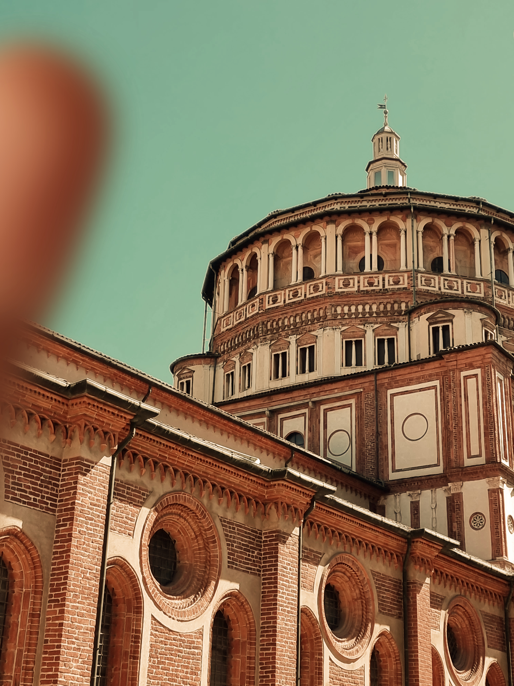

I bilden har jag ändrat färgbalans där jag tog ner en mängd grön och röd färg för att få himlen blå. Jag har också ändrat färg på en av byggnaden så det får en varmare färgton så det passar in med andra byggnader. I slutet använder jag corp verktyg för att få bort huvudet som finns i vänster sida.


I bilden har jag ögat ljusstyrka och kontrast, sen har jag också höjde mättnad för att få färgen inte såg grå ut, sedan använder jag patch tool för att ta bort flygplanen som finns på höger upp av bilden.


I bilden har jag ändrat färgbalans på himlen, där tog jag ner mängden grön och röd färg sedan höjde blå färg för att få himlen blå. Jag har också höjd ljusstyrka på bilden för att göra bilden mer solig. För att ta bort fingret på vänstersidan har jag använt både clone och patch tool, först tar jag clone tool och byta ut himlen mot fingret och på platsen som fingret täcka byggnaden tar jag patch too.